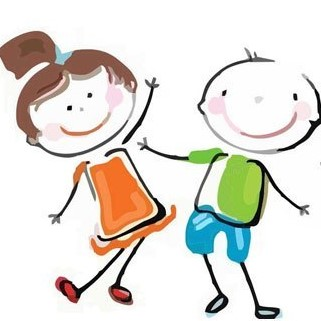
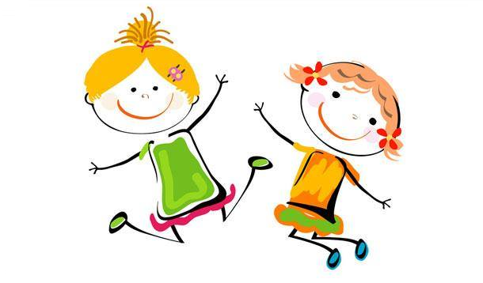

Játék szabályok
Édesanya készített nektek minden féle "játékot", vagy érdekességet, amit édesanya meg tud csinálni. Édesanya is sokat gyakorol vele és nektek is örömet szeretne szerezni. Élvezzétek, tanuljatok, játszatok! Váljon egészségetekre, édesanyának meg fejlődésére. :)
Ha valami nem tetszik, ne hisztizz, hisz nem egy profi csinálta ezt az egészet, csak édesanya. És hidd el, hogy megpróbálom a legjobb tudásom szerint a legszebbet és legérdekesebbet megcsinálni neked. Ha ötleted van, kérésed van, mond el, és még az is lehet, hogy tudunk rajta segíteni. Ha kérdésed van, tedd fel és megpróbáok válaszolni.
Mindenkinek lesz külön oldala és azt használja. Ha akarod használni a másikét is, tőlem lehet, de azért ajánlatos, hogy őt is kérdezd meg róla. Megpróbálom időként fejleszteni mindenkinek az oldalát, de azért csodát ne várjatok tőlem. A "Vegyes" oldalba majd olyanok lesznek, akit bárki nyugodtan használhat. Még az is lehet, hogy majd összegyűjtök nektek játék és videó linkeket. De ez még a jővő titka. Eddig ennyi van, ezt kell élvezni!
Sok-sok puszi! Nagyon szeretlek benneteket!